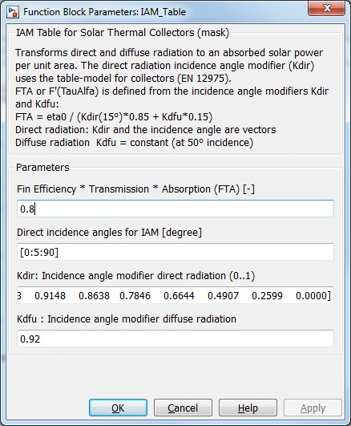

IAM Table
IAM Table
Path: CARNOT/Source/Solar_Thermal/IncidenceAngleModifier
IAM Table
Path:
CARNOT/Source/Solar_Thermal/IncidenceAngleModifier
Purpose
This block transforms incoming direct and diffuse radiation to an absorbed solar power per unit area.
Description
The direct radiation incidence angle modifier (Kdir)
uses the table model from EN 12975. Specify an incidence angle vector and a Kdir for each
incidence angle. These values are typically given in a table in the test report.
For diffuse radiation the
incidence angle modifier is
Kdfu = constant (at 50° incidence
angle)
With:
teta: incidence angle (0° = vertical)
Kdir: direct radiation incidence angle modifier
Kdfu: diffuse radiation incidence angle modifier
The Fin Efficiency * Transmittance * Absorbtance "FTA" or F'(TauAlfa) is defined from the incidence angle
modifiers Kdir and Kdfu:
FTA = eta0 / (Kdir(15°)*0.85 + Kdfu*0.15)
Inputs:
Parameters and Dialog Box

Literature
EN 12975 Solar thermal Collectors
Characteristics
Direct Feedthrough Yes
Sample
time
Inherited
from driving block
States
none
Vectorized
No